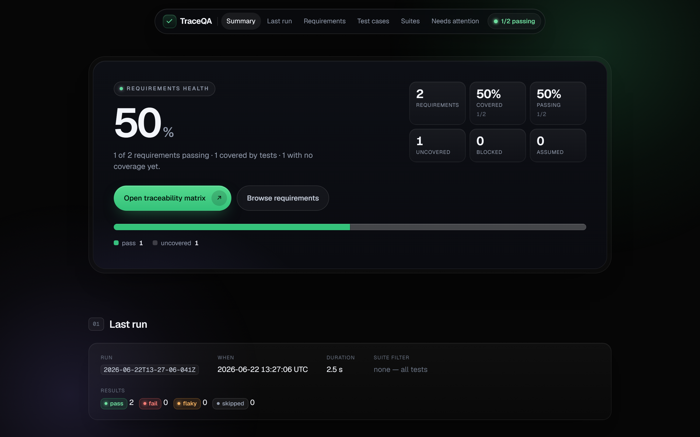
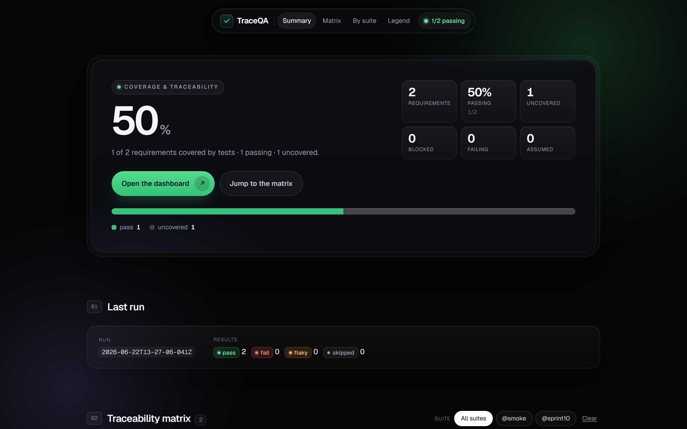
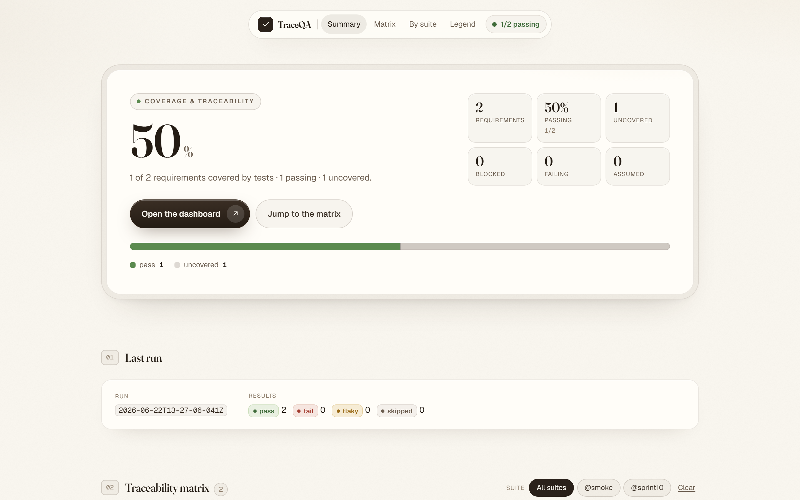

requirements-authoring
Normalize any source (folder, text, CSV, PDF, repo) into canonical requirement files, each with Given, When, Then.
TraceQA turns requirements into a Playwright suite and a coverage report. AI runs only when something is created or breaks.

Authoring and repair use the model. The suite that runs every day never does.
Requirements become tagged Playwright specs, with a human approval gate on every edit.
Plain Playwright executes the suite on every commit. No model in the loop, no model-driven flake.
A deterministic report maps each requirement to its tests, results, and blocked state.
Each runs once, on demand. None of them lives in the run loop.
Normalize any source (folder, text, CSV, PDF, repo) into canonical requirement files, each with Given, When, Then.
Map page actions to selectors on a confidence ladder. Cache first, discover only when needed.
Turn a requirement and its dependencies into a deterministic spec, tagged by requirement and by suite.
Classify each failure as product bug, selector drift, or flake. Repairs stay behind a human gate.
Switch the whole system with a single flag. Dark for the terminal, editorial for the stakeholder deck.


Plain Playwright runs the suite. The model is never on the critical path.
The model proposes a test change. A human reviews it and merges it.
Generated from the index and the latest run. No network, no surprises.
Read the index first, then load only what a task actually needs.
A runnable skeleton with the conventions in place. It ships with a demo app, so the first run needs no setup.
npm install # also fetches the Playwright browser
npm test # seed suite vs the bundled demo app
npm run gen:dashboard # build the report from index + results